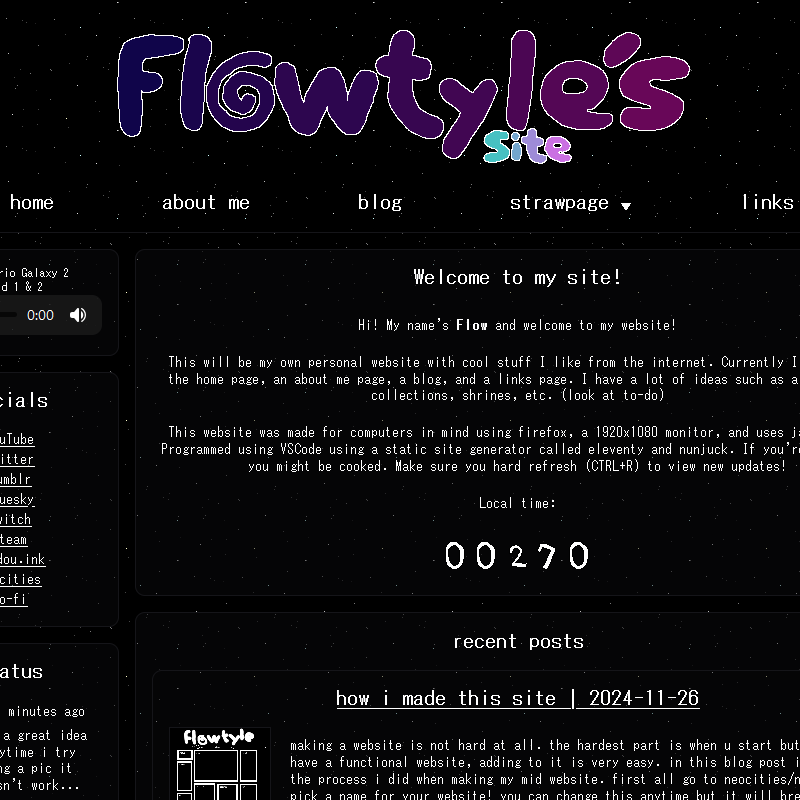

archive
welcome to my site archive. here i will document the updates of my site using the wayback machine. click on the images to go to the web archives! i'll continually update it once i feel like i've made a major update to the site (which could be a really long time). enjoy!
version 1 - may 24 2024
the very first version of my website. this was heavily inspired by hackerling's old layout. yeah it looks like complete ass and i didn't put any time into it but whatever. it was basically just a page for my social links instead of just using a linktree. i did have a guestbook tho! (that never got used)
version 2 - december 10 2024
the revamp of the website! i made it when i was figuring out what to do with my life so i made it in the meantime (as of writing this i still do not know). as u can tell it looks 10000000000x better like the difference is insane. i wanted to go with a bit of a classic look but it doesn't look that old it looks kinda modern i think. there are also alot of features with the biggest one being a blog! i was never really into writing but if i have a website i might as well. i just included a lot of things that i think would be fun and look cool. also a logo! which i need to remake.